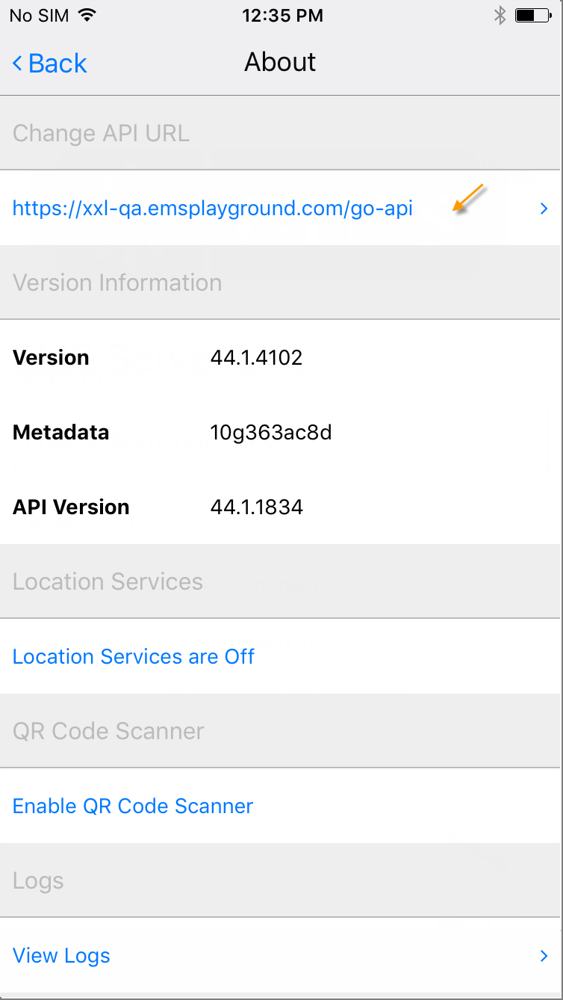

You can view and/or change the API URL to which your points in one of two ways:
3. Either option will allow you to view, enter, or change the URL. Check with your Administrator for the correct URL.

4. Tap Connect to finalize the new entry.